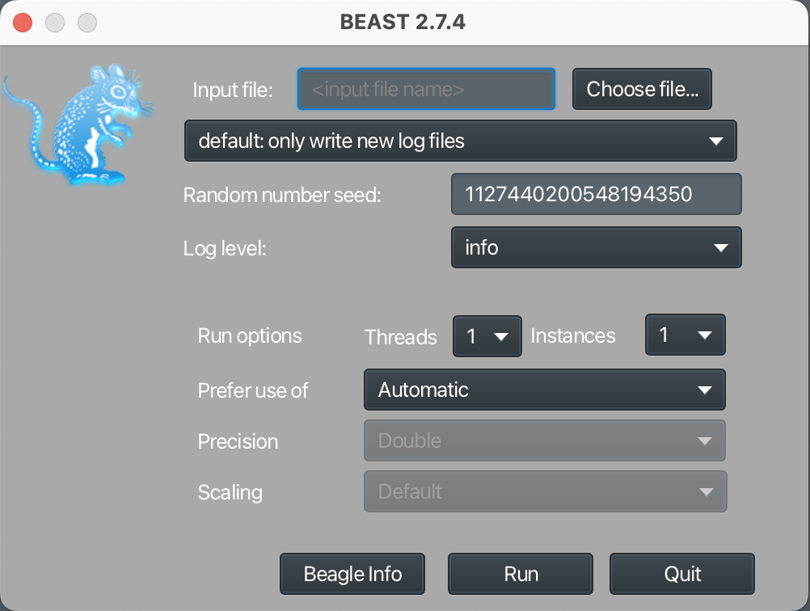

StarBEAST2
Goals
What follows is our workflow for the StarBEAST2 (Ogilvie, Bouckaert, and Drummond 2017) analysis for Zosterops. In this analysis we will generate Zosterops species trees from our individual Sanger sequenced loci using Bayesian phylogenetic inference and the Markov chain Monte Carlo (MCMC) algorithm.
Getting started
We are using BEAST v2.7.4 for the analysis (R. Bouckaert et al. 2019, 2014; Alexei J. Drummond et al. 2012; Alexei J. Drummond and Rambaut 2007). Quarto version 1.6.39 for Mac OS was used to document the workflow.
Data files
This analysis requires the mitochondrial DNA (mtDNA) alignments and the phased nuclear coding DNA (nuDNA) alignments from the Sanger sequenced loci. The protocol for phasing the nuDNA alignments may be found in the Sanger sequencing summary statistics and trees section. In addition a taxon set file will be required to assign individual samples to their taxon and/or population of origin.
Subsequent analysis requires the following fasta files including the mtDNA alignments and the phased nuDNA alignments from the procedure described in the Sanger sequencing summary statistics and trees section.
COI.fastaND2.fastaB3GNT9_phased.fastaBIRC2_phased.fastaCCDC_phased.fastaGPRC6_phased.fastaLACTBL_phased.fastaUSP38_phased.fasta
Below are the taxon set files required for these analyses.
Zosterops taxon sets A.txtZosterops taxon sets B.txt
Software and packages
BEAST2 software is available here. This analysis was conducted on a prior version of BEAST2 (v2.7.4 available here) but nearly identical results were achieved using the most recent version of BEAST2 (v2.7.7 as of the writing of this protocol). BEAUTi2 is the tool available with BEAST2 that allows for package management and a graphical user interface (GUI) to generate the xml files needed to run analyses. The programs LogCombiner and TreeAnnotator are also included with the BEAST2 install and will be needed to process the results of the MCMC runs. In addition, the program Tracer will be required to assess the results of an MCMC run and FigTree to edit and visualize species trees produced by BEAST2. Below is a summary of the needed software for this analysis and links to downloads.
BEAST2 v2.7.4 (R. Bouckaert et al. 2019) This install will include BEAST2, BEAUTi2, LogCombiner, and TreeAnnotator.
In addition the following packages will need to be installed from the BEAUTi2 GUI using the package manager. To install packages in BEAUTi2 select File from the top bar and Manage Packages from the drop down menu. The package manager will display a table of installed packages and their latest versions. To install select the desired package and click on the Install/Upgrade button. After installing or upgrading packages you will have to close BEAUTi2 and restart before proceeding. Install the following packages.
Generating the xml file
After installing the needed packages restart BEAUTi2. From the File menu select Template and then StarBeast2. The StarBEAST2 template should display nine tabs titled as follows; Partitions, Taxon Sets, Tip Dates, Gene Ploidy, Population Model, Site Model, Clock Model, Priors, and MCMC.
Partitions
Sequence alignments will be added to the xml file in the Partitions tab. This can be done by either clicking the + button at the bottom of the tab and selecting Import Alignment from the subsequent menu options or by simply dragging the fasta file for each alignment into the Partitions tab. After specifying that an alignment is being imported select nucleotide when asked by BEAUTi2 to “Choose the datatype”. For each locus the correct number of taxa, sites, and data type should be listed. For each the file name will be used as the name BEAST2 uses for that particular locus. Also each locus should have a Site Model, Clock Model, and Tree unique to that alignment and with the same name. The Partition tab should look like this when completed.

Taxon sets
For the mtDNA alignments each individual sample has only a single sequence while there are two sequences for the diploid nuDNA alignments. The two phased sequences for each diploid individual sample should be labeled a and b (i.e. ZJja004a and ZJja004b are the two phased sequences for sample ZJja004). The a and b suffixes were automatically added to sample names for the phased sequences in PHASE 2.1.1 (see Sanger sequencing summary statistics and trees). For consistency an a suffix was manually added to the sample name for each sequence in the mtDNA alignments to prevent a third sample name from appearing for each sample with both mtDNA and nuDNA sequences in the Taxon sets tab.
Some project numbers do not necessarily reflect the taxonomic origin of the individual samples. For example, samples ZJlo001 - ZJlo005 appear based on their project number designations to be Zosterops japonicus loochoensis but these project numbers were assigned in error before realizing they originated on the island of Chichijima outside the range of Z. japonicus loochoensis. For the Ogasawara Islands the subspecies designation for Z. japonicus is uncertain with some suspicion that these birds are subspecies hybrids between Z. japonicus stejnegeri in the Izu Islands and Z. japonicus alani in the Ogasawara/Volcano Islands. For our purposes we assigned birds in the Ogasawara and Volcano Islands the taxonomic designation Z. japonicus alani and birds in the Izu Islands Z. japonicus stejnegeri with the realization that gene flow may be occurring throughout these oceanic islands.
Click the Taxon sets tab. A list of sample names corresponding to the sequences in the alignments should appear in the Taxon column. For each sample a designation could be manually entered into the Species/Population column (time consuming) or automatically filled from a taxon sets file. To automatically add information on taxon assignment and/or population of origin click the Guess button at the bottom of the tab. Another window will open. Select the radio button corresponding to the read from file and the corresponding Browse button to select the appropriate taxon sets file. Click the Show options button and select txt to allow for the selection of txt files as taxon set entries. For the first set of BEAST2 runs samples were grouped by taxon (species and subspecies) and geography (island or island group) according to the Zosterops taxon sets A.txt file. This file is tab delimited and contains no headers and two columns with the identifying string for each individual sequence and the associated taxon and locality data as follows.
ZAsu001a Zosterops atrifrons surdus
ZAsu001b Zosterops atrifrons surdus
ZAsu002a Zosterops atrifrons surdus
ZAsu002b Zosterops atrifrons surdus
ZEba001a Zosterops everetti basilanicus
ZEba001b Zosterops everetti basilanicus
ZEba002a Zosterops everetti basilanicus
ZEba002b Zosterops everetti basilanicus
ZEba003a Zosterops everetti basilanicus
ZEba003b Zosterops everetti basilanicus
ZEbo001a Zosterops everetti boholensis
ZEbo001b Zosterops everetti boholensis
ZERxx001a Zosterops erythropleurus
ZERxx002a Zosterops erythropleurus
ZERxx002b Zosterops erythropleurus
ZERxx003a Zosterops erythropleurus
ZERxx003b Zosterops erythropleurus
ZERxx004a Zosterops erythropleurus
ZERxx004b Zosterops erythropleurus
ZERxx005a Zosterops erythropleurus
ZERxx005b Zosterops erythropleurus
ZJal001a Zosterops japonicus alani HAHAJIMA
ZJal001b Zosterops japonicus alani HAHAJIMA
ZJal002a Zosterops japonicus alani HAHAJIMA
ZJal003a Zosterops japonicus alani HAHAJIMA
ZJal004a Zosterops japonicus alani HAHAJIMA
ZJal005a Zosterops japonicus alani HAHAJIMA
ZJal006a Zosterops japonicus alani IMOTOJIMA
ZJal006b Zosterops japonicus alani IMOTOJIMA
ZJal007a Zosterops japonicus alani IMOTOJIMA
ZJal008a Zosterops japonicus alani IMOTOJIMA
ZJal009a Zosterops japonicus alani IMOTOJIMA
ZJal010a Zosterops japonicus alani ANEJIMA
ZJal010b Zosterops japonicus alani ANEJIMA
ZJal011a Zosterops japonicus alani ANEJIMA
ZJal012a Zosterops japonicus alani ANEJIMA
ZJal013a Zosterops japonicus alani ANEJIMA
ZJal014a Zosterops japonicus alani ANEJIMA
ZJal015a Zosterops japonicus alani IMOTOJIMA
ZJal016a Zosterops japonicus alani IWOJIMA
ZJal016b Zosterops japonicus alani IWOJIMA
ZJba001a Zosterops meyeni LANYU
ZJba002a Zosterops meyeni LANYU
ZJin001a Zosterops japonicus insularis OSUMI
ZJin001b Zosterops japonicus insularis OSUMI
ZJin003a Zosterops japonicus insularis OSUMI
ZJin003b Zosterops japonicus insularis OSUMI
ZJja001a Zosterops japonicus japonicus GEOJE
ZJja001b Zosterops japonicus japonicus GEOJE
ZJja002a Zosterops japonicus japonicus GEOJE
ZJja003a Zosterops japonicus japonicus JEJU
ZJja003b Zosterops japonicus japonicus JEJU
ZJja004a Zosterops japonicus japonicus JEJU
ZJja004b Zosterops japonicus japonicus JEJU
ZJja005a Zosterops japonicus japonicus JEJU
ZJja006a Zosterops japonicus japonicus JEJU
ZJja007a Zosterops japonicus japonicus JEJU
ZJja008a Zosterops japonicus japonicus HONSHU
ZJja009a Zosterops japonicus japonicus HEUKSANDO
ZJja010a Zosterops japonicus japonicus HEUKSANDO
ZJja011a Zosterops japonicus japonicus HEUKSANDO
ZJja012a Zosterops japonicus japonicus HONSHU
ZJja012b Zosterops japonicus japonicus HONSHU
ZJja013a Zosterops japonicus japonicus HONSHU
ZJja014a Zosterops japonicus japonicus HONSHU
ZJja014b Zosterops japonicus japonicus HONSHU
ZJja015a Zosterops japonicus japonicus HONSHU
ZJja015b Zosterops japonicus japonicus HONSHU
ZJja016a Zosterops japonicus japonicus SHIKOKU
ZJja016b Zosterops japonicus japonicus SHIKOKU
ZJja017a Zosterops japonicus japonicus HONSHU
ZJja017b Zosterops japonicus japonicus HONSHU
ZJja018a Zosterops japonicus japonicus HOKKAIDO
ZJja018b Zosterops japonicus japonicus HOKKAIDO
ZJja019a Zosterops japonicus japonicus HONSHU
ZJja019b Zosterops japonicus japonicus HONSHU
ZJja021a Zosterops japonicus japonicus HONSHU
ZJja022a Zosterops japonicus japonicus HONSHU
ZJja022b Zosterops japonicus japonicus HONSHU
ZJja024a Zosterops japonicus japonicus HONSHU
ZJja024b Zosterops japonicus japonicus HONSHU
ZJja026a Zosterops japonicus japonicus HONSHU
ZJja031a Zosterops japonicus japonicus HONSHU
ZJja032a Zosterops japonicus japonicus HONSHU
ZJja034a Zosterops japonicus japonicus TSUSHIMA
ZJja034b Zosterops japonicus japonicus TSUSHIMA
ZJja035a Zosterops japonicus japonicus TSUSHIMA
ZJlo001a Zosterops japonicus alani CHICHIJIMA
ZJlo001b Zosterops japonicus alani CHICHIJIMA
ZJlo002a Zosterops japonicus alani CHICHIJIMA
ZJlo003a Zosterops japonicus alani CHICHIJIMA
ZJlo004a Zosterops japonicus alani CHICHIJIMA
ZJlo005a Zosterops japonicus alani CHICHIJIMA
ZJlo006a Zosterops japonicus loochoensis IRIOMOTE
ZJlo006b Zosterops japonicus loochoensis IRIOMOTE
ZJlo007a Zosterops japonicus loochoensis OKINAWA
ZJlo007b Zosterops japonicus loochoensis OKINAWA
ZJlo008a Zosterops japonicus loochoensis OKINAWA
ZJlo009a Zosterops japonicus loochoensis OKINAWA
ZJlo010a Zosterops japonicus loochoensis ISHIGAKI
ZJlo010b Zosterops japonicus loochoensis ISHIGAKI
ZJlo011a Zosterops japonicus loochoensis ISHIGAKI
ZJlo012a Zosterops japonicus loochoensis KIKAI
ZJlo012b Zosterops japonicus loochoensis KIKAI
ZJlo013a Zosterops japonicus loochoensis KIKAI
ZJlo014a Zosterops japonicus loochoensis IRIOMOTE
ZJlo014b Zosterops japonicus loochoensis IRIOMOTE
ZJlo015a Zosterops japonicus loochoensis AMAMI
ZJlo015b Zosterops japonicus loochoensis AMAMI
ZJlo016a Zosterops japonicus loochoensis MIYAKO
ZJlo016b Zosterops japonicus loochoensis MIYAKO
ZJlo017a Zosterops japonicus loochoensis IRIOMOTE
ZJlo018a Zosterops japonicus loochoensis IRIOMOTE
ZJlo020a Zosterops japonicus loochoensis IRIOMOTE
ZJlo021a Zosterops japonicus loochoensis TOKUNO
ZJlo021b Zosterops japonicus loochoensis TOKUNO
ZJlo022a Zosterops japonicus loochoensis TOKUNO
ZJlo023a Zosterops japonicus loochoensis OKINOERABU
ZJlo023b Zosterops japonicus loochoensis OKINOERABU
ZJlo024a Zosterops japonicus loochoensis YONAGUNI
ZJlo024b Zosterops japonicus loochoensis YONAGUNI
ZJlo026a Zosterops japonicus loochoensis MIYAKO
ZJlo027a Zosterops japonicus loochoensis YONAGUNI
ZJlo031a Zosterops japonicus loochoensis KUME
ZJlo031b Zosterops japonicus loochoensis KUME
ZJlo032a Zosterops japonicus loochoensis KUME
ZJlo034a Zosterops japonicus loochoensis MIYAKO
ZJlo035a Zosterops japonicus loochoensis OKINAWA
ZJlo035b Zosterops japonicus loochoensis OKINAWA
ZJlo038a Zosterops japonicus loochoensis OKINAWA
ZJlo039a Zosterops japonicus loochoensis ISHIGAKI
ZJlo042a Zosterops japonicus loochoensis AMAMI
ZJlo042b Zosterops japonicus loochoensis AMAMI
ZJlo045a Zosterops japonicus loochoensis AMAMI
ZJlo051a Zosterops japonicus loochoensis OKINOERABU
ZJlo055a Zosterops japonicus loochoensis KIKAI
ZJlo055b Zosterops japonicus loochoensis KIKAI
ZJsi001a Zosterops simplex TAIWAN
ZJsi001b Zosterops simplex TAIWAN
ZJsi002a Zosterops simplex TAIWAN
ZJsi002b Zosterops simplex TAIWAN
ZJsi003a Zosterops simplex TAIWAN
ZJsi003b Zosterops simplex TAIWAN
ZJsi005a Zosterops simplex TAIWAN
ZJsi005b Zosterops simplex TAIWAN
ZJsi015a Zosterops simplex MACAO
ZJsi015b Zosterops simplex MACAO
ZJsi017a Zosterops simplex GUANGXI
ZJsi017b Zosterops simplex GUANGXI
ZJsi018a Zosterops simplex SICHUAN
ZJsi018b Zosterops simplex SICHUAN
ZJsi023a Zosterops simplex GUANGDONG
ZJsi024a Zosterops simplex GUANGDONG
ZJsi025a Zosterops simplex GUANGDONG
ZJsi026a Zosterops simplex YUNNAN
ZJsi026b Zosterops simplex YUNNAN
ZJsi027a Zosterops simplex GUANGXI
ZJsi027b Zosterops simplex GUANGXI
ZJsi028a Zosterops simplex GUANGXI
ZJsi032a Zosterops simplex GUANGXI
ZJsi032b Zosterops simplex GUANGXI
ZJst001a Zosterops japonicus stejnegeri NIIJIMA
ZJst001b Zosterops japonicus stejnegeri NIIJIMA
ZJst002a Zosterops japonicus stejnegeri AOGASHIMA
ZJst002b Zosterops japonicus stejnegeri AOGASHIMA
ZJst006a Zosterops japonicus stejnegeri AOGASHIMA
ZJst007a Zosterops japonicus stejnegeri KOZUSHIMA
ZJst007b Zosterops japonicus stejnegeri KOZUSHIMA
ZJst008a Zosterops japonicus stejnegeri KOZUSHIMA
ZJst010a Zosterops japonicus stejnegeri KOZUSHIMA
ZJst011a Zosterops japonicus stejnegeri KOZUSHIMA
ZJst012a Zosterops japonicus stejnegeri MIYAKE
ZJst012b Zosterops japonicus stejnegeri MIYAKE
ZJst013a Zosterops japonicus stejnegeri MIYAKE
ZJst014a Zosterops japonicus stejnegeri MIYAKE
ZJst015a Zosterops japonicus stejnegeri MIYAKE
ZJst016a Zosterops japonicus stejnegeri MIYAKE
ZJst017a Zosterops japonicus stejnegeri NIIJIMA
ZMOdi001a Zosterops montanus diuatae MINDANAO
ZMOdi001b Zosterops montanus diuatae MINDANAO
ZMOha001a Zosterops montanus halconensis MINDORO
ZMOha001b Zosterops montanus halconensis MINDORO
ZMOmo001a Zosterops montanus montanus SULAWESI
ZMOmo001b Zosterops montanus montanus SULAWESI
ZMOmo002a Zosterops montanus montanus JAVA
ZMOmo002b Zosterops montanus montanus JAVA
ZMOmo003a Zosterops montanus montanus JAVA
ZMOmo003b Zosterops montanus montanus JAVA
ZMOmo004a Zosterops montanus montanus JAVA
ZMOmo004b Zosterops montanus montanus JAVA
ZMOpa001a Zosterops montanus parkesi PALAWAN
ZMOpa001b Zosterops montanus parkesi PALAWAN
ZMOpa002a Zosterops montanus parkesi PALAWAN
ZMOpa002b Zosterops montanus parkesi PALAWAN
ZMOpe001a Zosterops montanus pectoralis NEGROS
ZMOpe001b Zosterops montanus pectoralis NEGROS
ZMOpe002a Zosterops montanus pectoralis NEGROS
ZMOpe002b Zosterops montanus pectoralis NEGROS
ZMOpe003a Zosterops montanus pectoralis NEGROS
ZMOpe003b Zosterops montanus pectoralis NEGROS
ZMOvu001a Zosterops montanus vulcani MINDANAO
ZMOvu001b Zosterops montanus vulcani MINDANAO
ZMOvu002a Zosterops montanus vulcani MINDANAO
ZMOvu002b Zosterops montanus vulcani MINDANAO
ZMOvu003a Zosterops montanus vulcani MINDANAO
ZMOvu003b Zosterops montanus vulcani MINDANAO
ZMOvu004a Zosterops montanus vulcani MINDANAO
ZMOvu004b Zosterops montanus vulcani MINDANAO
ZMOvu005a Zosterops montanus vulcani MINDANAO
ZMOvu006a Zosterops montanus vulcani MINDANAO
ZMOvu006b Zosterops montanus vulcani MINDANAO
ZMOvu007a Zosterops montanus vulcani MINDANAO
ZMOwh002a Zosterops montanus whiteheadi LUZON
ZMOwh002b Zosterops montanus whiteheadi LUZON
ZMOwh003a Zosterops montanus whiteheadi LUZON
ZMOwh003b Zosterops montanus whiteheadi LUZON
ZMOwh004a Zosterops montanus whiteheadi LUZON
ZMOwh004b Zosterops montanus whiteheadi LUZON
ZMOwh005a Zosterops montanus whiteheadi LUZON
ZMOwh005b Zosterops montanus whiteheadi LUZON
ZMOwh006a Zosterops montanus whiteheadi LUZON
ZMOwh006b Zosterops montanus whiteheadi LUZON
ZMOxx001a Zosterops montanus PANAY
ZMOxx002a Zosterops montanus PANAY
ZMOxx002b Zosterops montanus PANAY
ZMOxx003a Zosterops montanus PANAY
ZMOxx003b Zosterops montanus PANAY
ZMOxx004a Zosterops montanus PANAY
ZMOxx004b Zosterops montanus PANAY
ZMOxx005a Zosterops montanus PANAY
ZMOxx005b Zosterops montanus PANAY
ZMOxx006a Zosterops montanus PANAY
ZMOxx006b Zosterops montanus PANAY
ZMOxx007a Zosterops montanus PANAY
ZMOxx007b Zosterops montanus PANAY
ZMOxx008a Zosterops montanus PANAY
ZMOxx008b Zosterops montanus PANAY
ZMxx001a Zosterops meyeni BATANES
ZMxx001b Zosterops meyeni BATANES
ZMxx002a Zosterops meyeni BATANES
ZMxx002b Zosterops meyeni BATANES
ZMxx003a Zosterops meyeni LANYU
ZMxx003b Zosterops meyeni LANYU
ZMxx004a Zosterops meyeni LANYU
ZMxx004b Zosterops meyeni LANYU
ZMxx005a Zosterops meyeni LANYU
ZMxx005b Zosterops meyeni LANYU
ZMxx006a Zosterops meyeni LANYU
ZMxx007a Zosterops meyeni LANYU
ZMxx008a Zosterops meyeni LANYU
ZNca001a Zosterops nigrorum catamanensis CAMIGUINSUR
ZNca001b Zosterops nigrorum catamanensis CAMIGUINSUR
ZNin001a Zosterops nigrorum innominatus LUZON
ZNin001b Zosterops nigrorum innominatus LUZON
ZNlu001a Zosterops nigrorum luzonicus LUZON
ZNlu001b Zosterops nigrorum luzonicus LUZON
ZNme001a Zosterops nigrorum meyleri CAMIGUINNORTE
ZNme001b Zosterops nigrorum meyleri CAMIGUINNORTE
ZNni001a Zosterops nigrorum nigrorum PANAY
ZNni001b Zosterops nigrorum nigrorum PANAY
ZPxx001a Zosterops simplex SINGAPORE
ZPxx001b Zosterops simplex SINGAPORE
ZPxx002a Zosterops simplex SINGAPORE
ZPxx002b Zosterops simplex SINGAPOREThe file Zosterops taxon sets B.txt contains the same list of individual samples as the Zosterops taxon sets A.txt file but with samples collapsed according to taxon. There is no locality information in this file except for the samples of Z. montanus collected on the island of Panay. This file appears as follows.
ZAsu001a Zosterops atrifrons surdus
ZAsu001b Zosterops atrifrons surdus
ZAsu002a Zosterops atrifrons surdus
ZAsu002b Zosterops atrifrons surdus
ZEba001a Zosterops everetti basilanicus
ZEba001b Zosterops everetti basilanicus
ZEba002a Zosterops everetti basilanicus
ZEba002b Zosterops everetti basilanicus
ZEba003a Zosterops everetti basilanicus
ZEba003b Zosterops everetti basilanicus
ZEbo001a Zosterops everetti boholensis
ZEbo001b Zosterops everetti boholensis
ZERxx001a Zosterops erythropleurus
ZERxx002a Zosterops erythropleurus
ZERxx002b Zosterops erythropleurus
ZERxx003a Zosterops erythropleurus
ZERxx003b Zosterops erythropleurus
ZERxx004a Zosterops erythropleurus
ZERxx004b Zosterops erythropleurus
ZERxx005a Zosterops erythropleurus
ZERxx005b Zosterops erythropleurus
ZJal001a Zosterops japonicus alani
ZJal001b Zosterops japonicus alani
ZJal002a Zosterops japonicus alani
ZJal003a Zosterops japonicus alani
ZJal004a Zosterops japonicus alani
ZJal005a Zosterops japonicus alani
ZJal006a Zosterops japonicus alani
ZJal006b Zosterops japonicus alani
ZJal007a Zosterops japonicus alani
ZJal008a Zosterops japonicus alani
ZJal009a Zosterops japonicus alani
ZJal010a Zosterops japonicus alani
ZJal010b Zosterops japonicus alani
ZJal011a Zosterops japonicus alani
ZJal012a Zosterops japonicus alani
ZJal013a Zosterops japonicus alani
ZJal014a Zosterops japonicus alani
ZJal015a Zosterops japonicus alani
ZJal016a Zosterops japonicus alani
ZJal016b Zosterops japonicus alani
ZJba001a Zosterops meyeni
ZJba002a Zosterops meyeni
ZJin001a Zosterops japonicus insularis
ZJin001b Zosterops japonicus insularis
ZJin003a Zosterops japonicus insularis
ZJin003b Zosterops japonicus insularis
ZJja001a Zosterops japonicus japonicus
ZJja001b Zosterops japonicus japonicus
ZJja002a Zosterops japonicus japonicus
ZJja003a Zosterops japonicus japonicus
ZJja003b Zosterops japonicus japonicus
ZJja004a Zosterops japonicus japonicus
ZJja004b Zosterops japonicus japonicus
ZJja005a Zosterops japonicus japonicus
ZJja006a Zosterops japonicus japonicus
ZJja007a Zosterops japonicus japonicus
ZJja008a Zosterops japonicus japonicus
ZJja009a Zosterops japonicus japonicus
ZJja010a Zosterops japonicus japonicus
ZJja011a Zosterops japonicus japonicus
ZJja012a Zosterops japonicus japonicus
ZJja012b Zosterops japonicus japonicus
ZJja013a Zosterops japonicus japonicus
ZJja014a Zosterops japonicus japonicus
ZJja014b Zosterops japonicus japonicus
ZJja015a Zosterops japonicus japonicus
ZJja015b Zosterops japonicus japonicus
ZJja016a Zosterops japonicus japonicus
ZJja016b Zosterops japonicus japonicus
ZJja017a Zosterops japonicus japonicus
ZJja017b Zosterops japonicus japonicus
ZJja018a Zosterops japonicus japonicus
ZJja018b Zosterops japonicus japonicus
ZJja019a Zosterops japonicus japonicus
ZJja019b Zosterops japonicus japonicus
ZJja021a Zosterops japonicus japonicus
ZJja022a Zosterops japonicus japonicus
ZJja022b Zosterops japonicus japonicus
ZJja024a Zosterops japonicus japonicus
ZJja024b Zosterops japonicus japonicus
ZJja026a Zosterops japonicus japonicus
ZJja031a Zosterops japonicus japonicus
ZJja032a Zosterops japonicus japonicus
ZJja034a Zosterops japonicus japonicus
ZJja034b Zosterops japonicus japonicus
ZJja035a Zosterops japonicus japonicus
ZJlo001a Zosterops japonicus alani
ZJlo001b Zosterops japonicus alani
ZJlo002a Zosterops japonicus alani
ZJlo003a Zosterops japonicus alani
ZJlo004a Zosterops japonicus alani
ZJlo005a Zosterops japonicus alani
ZJlo006a Zosterops japonicus loochoensis
ZJlo006b Zosterops japonicus loochoensis
ZJlo007a Zosterops japonicus loochoensis
ZJlo007b Zosterops japonicus loochoensis
ZJlo008a Zosterops japonicus loochoensis
ZJlo009a Zosterops japonicus loochoensis
ZJlo010a Zosterops japonicus loochoensis
ZJlo010b Zosterops japonicus loochoensis
ZJlo011a Zosterops japonicus loochoensis
ZJlo012a Zosterops japonicus loochoensis
ZJlo012b Zosterops japonicus loochoensis
ZJlo013a Zosterops japonicus loochoensis
ZJlo014a Zosterops japonicus loochoensis
ZJlo014b Zosterops japonicus loochoensis
ZJlo015a Zosterops japonicus loochoensis
ZJlo015b Zosterops japonicus loochoensis
ZJlo016a Zosterops japonicus loochoensis
ZJlo016b Zosterops japonicus loochoensis
ZJlo017a Zosterops japonicus loochoensis
ZJlo018a Zosterops japonicus loochoensis
ZJlo020a Zosterops japonicus loochoensis
ZJlo021a Zosterops japonicus loochoensis
ZJlo021b Zosterops japonicus loochoensis
ZJlo022a Zosterops japonicus loochoensis
ZJlo023a Zosterops japonicus loochoensis
ZJlo023b Zosterops japonicus loochoensis
ZJlo024a Zosterops japonicus loochoensis
ZJlo024b Zosterops japonicus loochoensis
ZJlo026a Zosterops japonicus loochoensis
ZJlo027a Zosterops japonicus loochoensis
ZJlo031a Zosterops japonicus loochoensis
ZJlo031b Zosterops japonicus loochoensis
ZJlo032a Zosterops japonicus loochoensis
ZJlo034a Zosterops japonicus loochoensis
ZJlo035a Zosterops japonicus loochoensis
ZJlo035b Zosterops japonicus loochoensis
ZJlo038a Zosterops japonicus loochoensis
ZJlo039a Zosterops japonicus loochoensis
ZJlo042a Zosterops japonicus loochoensis
ZJlo042b Zosterops japonicus loochoensis
ZJlo045a Zosterops japonicus loochoensis
ZJlo051a Zosterops japonicus loochoensis
ZJlo055a Zosterops japonicus loochoensis
ZJlo055b Zosterops japonicus loochoensis
ZJsi001a Zosterops simplex
ZJsi001b Zosterops simplex
ZJsi002a Zosterops simplex
ZJsi002b Zosterops simplex
ZJsi003a Zosterops simplex
ZJsi003b Zosterops simplex
ZJsi005a Zosterops simplex
ZJsi005b Zosterops simplex
ZJsi015a Zosterops simplex
ZJsi015b Zosterops simplex
ZJsi017a Zosterops simplex
ZJsi017b Zosterops simplex
ZJsi018a Zosterops simplex
ZJsi018b Zosterops simplex
ZJsi023a Zosterops simplex
ZJsi024a Zosterops simplex
ZJsi025a Zosterops simplex
ZJsi026a Zosterops simplex
ZJsi026b Zosterops simplex
ZJsi027a Zosterops simplex
ZJsi027b Zosterops simplex
ZJsi028a Zosterops simplex
ZJsi032a Zosterops simplex
ZJsi032b Zosterops simplex
ZJst001a Zosterops japonicus stejnegeri
ZJst001b Zosterops japonicus stejnegeri
ZJst002a Zosterops japonicus stejnegeri
ZJst002b Zosterops japonicus stejnegeri
ZJst006a Zosterops japonicus stejnegeri
ZJst007a Zosterops japonicus stejnegeri
ZJst007b Zosterops japonicus stejnegeri
ZJst008a Zosterops japonicus stejnegeri
ZJst010a Zosterops japonicus stejnegeri
ZJst011a Zosterops japonicus stejnegeri
ZJst012a Zosterops japonicus stejnegeri
ZJst012b Zosterops japonicus stejnegeri
ZJst013a Zosterops japonicus stejnegeri
ZJst014a Zosterops japonicus stejnegeri
ZJst015a Zosterops japonicus stejnegeri
ZJst016a Zosterops japonicus stejnegeri
ZJst017a Zosterops japonicus stejnegeri
ZMOdi001a Zosterops montanus diuatae
ZMOdi001b Zosterops montanus diuatae
ZMOha001a Zosterops montanus halconensis
ZMOha001b Zosterops montanus halconensis
ZMOmo001a Zosterops montanus montanus
ZMOmo001b Zosterops montanus montanus
ZMOmo002a Zosterops montanus montanus
ZMOmo002b Zosterops montanus montanus
ZMOmo003a Zosterops montanus montanus
ZMOmo003b Zosterops montanus montanus
ZMOmo004a Zosterops montanus montanus
ZMOmo004b Zosterops montanus montanus
ZMOpa001a Zosterops montanus parkesi
ZMOpa001b Zosterops montanus parkesi
ZMOpa002a Zosterops montanus parkesi
ZMOpa002b Zosterops montanus parkesi
ZMOpe001a Zosterops montanus pectoralis
ZMOpe001b Zosterops montanus pectoralis
ZMOpe002a Zosterops montanus pectoralis
ZMOpe002b Zosterops montanus pectoralis
ZMOpe003a Zosterops montanus pectoralis
ZMOpe003b Zosterops montanus pectoralis
ZMOvu001a Zosterops montanus vulcani
ZMOvu001b Zosterops montanus vulcani
ZMOvu002a Zosterops montanus vulcani
ZMOvu002b Zosterops montanus vulcani
ZMOvu003a Zosterops montanus vulcani
ZMOvu003b Zosterops montanus vulcani
ZMOvu004a Zosterops montanus vulcani
ZMOvu004b Zosterops montanus vulcani
ZMOvu005a Zosterops montanus vulcani
ZMOvu006a Zosterops montanus vulcani
ZMOvu006b Zosterops montanus vulcani
ZMOvu007a Zosterops montanus vulcani
ZMOwh002a Zosterops montanus whiteheadi
ZMOwh002b Zosterops montanus whiteheadi
ZMOwh003a Zosterops montanus whiteheadi
ZMOwh003b Zosterops montanus whiteheadi
ZMOwh004a Zosterops montanus whiteheadi
ZMOwh004b Zosterops montanus whiteheadi
ZMOwh005a Zosterops montanus whiteheadi
ZMOwh005b Zosterops montanus whiteheadi
ZMOwh006a Zosterops montanus whiteheadi
ZMOwh006b Zosterops montanus whiteheadi
ZMOxx001a Zosterops montanus PANAY
ZMOxx002a Zosterops montanus PANAY
ZMOxx002b Zosterops montanus PANAY
ZMOxx003a Zosterops montanus PANAY
ZMOxx003b Zosterops montanus PANAY
ZMOxx004a Zosterops montanus PANAY
ZMOxx004b Zosterops montanus PANAY
ZMOxx005a Zosterops montanus PANAY
ZMOxx005b Zosterops montanus PANAY
ZMOxx006a Zosterops montanus PANAY
ZMOxx006b Zosterops montanus PANAY
ZMOxx007a Zosterops montanus PANAY
ZMOxx007b Zosterops montanus PANAY
ZMOxx008a Zosterops montanus PANAY
ZMOxx008b Zosterops montanus PANAY
ZMxx001a Zosterops meyeni
ZMxx001b Zosterops meyeni
ZMxx002a Zosterops meyeni
ZMxx002b Zosterops meyeni
ZMxx003a Zosterops meyeni
ZMxx003b Zosterops meyeni
ZMxx004a Zosterops meyeni
ZMxx004b Zosterops meyeni
ZMxx005a Zosterops meyeni
ZMxx005b Zosterops meyeni
ZMxx006a Zosterops meyeni
ZMxx007a Zosterops meyeni
ZMxx008a Zosterops meyeni
ZNca001a Zosterops nigrorum catamanensis
ZNca001b Zosterops nigrorum catamanensis
ZNin001a Zosterops nigrorum innominatus
ZNin001b Zosterops nigrorum innominatus
ZNlu001a Zosterops nigrorum luzonicus
ZNlu001b Zosterops nigrorum luzonicus
ZNme001a Zosterops nigrorum meyleri
ZNme001b Zosterops nigrorum meyleri
ZNni001a Zosterops nigrorum nigrorum
ZNni001b Zosterops nigrorum nigrorum
ZPxx001a Zosterops simplex SINGAPORE
ZPxx001b Zosterops simplex SINGAPORE
ZPxx002a Zosterops simplex SINGAPORE
ZPxx002b Zosterops simplex SINGAPOREZosterops taxon sets mtDNA.txt is a third taxon sets file that is limited to samples from the mtDNA alignments (COI and ND2). This file includes both taxon and locality data but note that for each haploid mtDNA sample there are no identifiers with the b suffix.
ZAsu001a Zosterops atrifrons surdus
ZAsu002a Zosterops atrifrons surdus
ZEba001a Zosterops everetti basilanicus
ZEba002a Zosterops everetti basilanicus
ZEba003a Zosterops everetti basilanicus
ZEbo001a Zosterops everetti boholensis
ZERxx001a Zosterops erythropleurus
ZERxx002a Zosterops erythropleurus
ZERxx003a Zosterops erythropleurus
ZERxx004a Zosterops erythropleurus
ZERxx005a Zosterops erythropleurus
ZJal001a Zosterops japonicus alani HAHAJIMA
ZJal002a Zosterops japonicus alani HAHAJIMA
ZJal003a Zosterops japonicus alani HAHAJIMA
ZJal004a Zosterops japonicus alani HAHAJIMA
ZJal005a Zosterops japonicus alani HAHAJIMA
ZJal006a Zosterops japonicus alani IMOTOJIMA
ZJal007a Zosterops japonicus alani IMOTOJIMA
ZJal008a Zosterops japonicus alani IMOTOJIMA
ZJal009a Zosterops japonicus alani IMOTOJIMA
ZJal010a Zosterops japonicus alani ANEJIMA
ZJal011a Zosterops japonicus alani ANEJIMA
ZJal012a Zosterops japonicus alani ANEJIMA
ZJal013a Zosterops japonicus alani ANEJIMA
ZJal014a Zosterops japonicus alani ANEJIMA
ZJal015a Zosterops japonicus alani IMOTOJIMA
ZJba001a Zosterops meyeni LANYU
ZJba002a Zosterops meyeni LANYU
ZJin001a Zosterops japonicus insularis OSUMI
ZJin003a Zosterops japonicus insularis OSUMI
ZJja002a Zosterops japonicus japonicus GEOJE
ZJja004a Zosterops japonicus japonicus JEJU
ZJja005a Zosterops japonicus japonicus JEJU
ZJja006a Zosterops japonicus japonicus JEJU
ZJja007a Zosterops japonicus japonicus JEJU
ZJja008a Zosterops japonicus japonicus HONSHU
ZJja009a Zosterops japonicus japonicus HEUKSANDO
ZJja010a Zosterops japonicus japonicus HEUKSANDO
ZJja011a Zosterops japonicus japonicus HEUKSANDO
ZJja013a Zosterops japonicus japonicus HONSHU
ZJja014a Zosterops japonicus japonicus HONSHU
ZJja015a Zosterops japonicus japonicus HONSHU
ZJja016a Zosterops japonicus japonicus SHIKOKU
ZJja017a Zosterops japonicus japonicus HONSHU
ZJja018a Zosterops japonicus japonicus HOKKAIDO
ZJja019a Zosterops japonicus japonicus HONSHU
ZJja021a Zosterops japonicus japonicus HONSHU
ZJja022a Zosterops japonicus japonicus HONSHU
ZJja026a Zosterops japonicus japonicus HONSHU
ZJja031a Zosterops japonicus japonicus HONSHU
ZJja032a Zosterops japonicus japonicus HONSHU
ZJja034a Zosterops japonicus japonicus TSUSHIMA
ZJja035a Zosterops japonicus japonicus TSUSHIMA
ZJlo001a Zosterops japonicus alani CHICHIJIMA
ZJlo002a Zosterops japonicus alani CHICHIJIMA
ZJlo003a Zosterops japonicus alani CHICHIJIMA
ZJlo004a Zosterops japonicus alani CHICHIJIMA
ZJlo005a Zosterops japonicus alani CHICHIJIMA
ZJlo007a Zosterops japonicus loochoensis OKINAWA
ZJlo008a Zosterops japonicus loochoensis OKINAWA
ZJlo009a Zosterops japonicus loochoensis OKINAWA
ZJlo010a Zosterops japonicus loochoensis ISHIGAKI
ZJlo011a Zosterops japonicus loochoensis ISHIGAKI
ZJlo012a Zosterops japonicus loochoensis KIKAI
ZJlo013a Zosterops japonicus loochoensis KIKAI
ZJlo014a Zosterops japonicus loochoensis IRIOMOTE
ZJlo015a Zosterops japonicus loochoensis AMAMI
ZJlo016a Zosterops japonicus loochoensis MIYAKO
ZJlo017a Zosterops japonicus loochoensis IRIOMOTE
ZJlo018a Zosterops japonicus loochoensis IRIOMOTE
ZJlo020a Zosterops japonicus loochoensis IRIOMOTE
ZJlo021a Zosterops japonicus loochoensis TOKUNO
ZJlo022a Zosterops japonicus loochoensis TOKUNO
ZJlo023a Zosterops japonicus loochoensis OKINOERABU
ZJlo024a Zosterops japonicus loochoensis YONAGUNI
ZJlo026a Zosterops japonicus loochoensis MIYAKO
ZJlo027a Zosterops japonicus loochoensis YONAGUNI
ZJlo031a Zosterops japonicus loochoensis KUME
ZJlo032a Zosterops japonicus loochoensis KUME
ZJlo034a Zosterops japonicus loochoensis MIYAKO
ZJlo038a Zosterops japonicus loochoensis OKINAWA
ZJlo039a Zosterops japonicus loochoensis ISHIGAKI
ZJlo042a Zosterops japonicus loochoensis AMAMI
ZJlo045a Zosterops japonicus loochoensis AMAMI
ZJlo051a Zosterops japonicus loochoensis OKINOERABU
ZJsi017a Zosterops simplex GUANGXI
ZJsi023a Zosterops simplex GUANGDONG
ZJsi024a Zosterops simplex GUANGDONG
ZJsi025a Zosterops simplex GUANGDONG
ZJsi026a Zosterops simplex YUNNAN
ZJsi027a Zosterops simplex GUANGXI
ZJsi028a Zosterops simplex GUANGXI
ZJst006a Zosterops japonicus stejnegeri AOGASHIMA
ZJst007a Zosterops japonicus stejnegeri KOZUSHIMA
ZJst008a Zosterops japonicus stejnegeri KOZUSHIMA
ZJst010a Zosterops japonicus stejnegeri KOZUSHIMA
ZJst011a Zosterops japonicus stejnegeri KOZUSHIMA
ZJst012a Zosterops japonicus stejnegeri MIYAKE
ZJst013a Zosterops japonicus stejnegeri MIYAKE
ZJst014a Zosterops japonicus stejnegeri MIYAKE
ZJst015a Zosterops japonicus stejnegeri MIYAKE
ZJst016a Zosterops japonicus stejnegeri MIYAKE
ZJst017a Zosterops japonicus stejnegeri NIIJIMA
ZMOdi001a Zosterops montanus diuatae MINDANAO
ZMOha001a Zosterops montanus halconensis MINDORO
ZMOmo001a Zosterops montanus montanus SULAWESI
ZMOmo002a Zosterops montanus montanus JAVA
ZMOmo003a Zosterops montanus montanus JAVA
ZMOmo004a Zosterops montanus montanus JAVA
ZMOpa001a Zosterops montanus parkesi PALAWAN
ZMOpa002a Zosterops montanus parkesi PALAWAN
ZMOpe001a Zosterops montanus pectoralis NEGROS
ZMOpe002a Zosterops montanus pectoralis NEGROS
ZMOpe003a Zosterops montanus pectoralis NEGROS
ZMOvu001a Zosterops montanus vulcani MINDANAO
ZMOvu002a Zosterops montanus vulcani MINDANAO
ZMOvu003a Zosterops montanus vulcani MINDANAO
ZMOvu004a Zosterops montanus vulcani MINDANAO
ZMOvu005a Zosterops montanus vulcani MINDANAO
ZMOvu006a Zosterops montanus vulcani MINDANAO
ZMOvu007a Zosterops montanus vulcani MINDANAO
ZMOwh002a Zosterops montanus whiteheadi LUZON
ZMOwh003a Zosterops montanus whiteheadi LUZON
ZMOwh004a Zosterops montanus whiteheadi LUZON
ZMOwh005a Zosterops montanus whiteheadi LUZON
ZMOwh006a Zosterops montanus whiteheadi LUZON
ZMOxx001a Zosterops montanus PANAY
ZMOxx002a Zosterops montanus PANAY
ZMOxx003a Zosterops montanus PANAY
ZMOxx004a Zosterops montanus PANAY
ZMOxx005a Zosterops montanus PANAY
ZMOxx006a Zosterops montanus PANAY
ZMOxx007a Zosterops montanus PANAY
ZMOxx008a Zosterops montanus PANAY
ZMxx001a Zosterops meyeni BATANES
ZMxx002a Zosterops meyeni BATANES
ZMxx003a Zosterops meyeni LANYU
ZMxx004a Zosterops meyeni LANYU
ZMxx005a Zosterops meyeni LANYU
ZMxx006a Zosterops meyeni LANYU
ZMxx007a Zosterops meyeni LANYU
ZMxx008a Zosterops meyeni LANYU
ZNca001a Zosterops nigrorum catamanensis CAMIGUINSUR
ZNin001a Zosterops nigrorum innominatus LUZON
ZNlu001a Zosterops nigrorum luzonicus LUZON
ZNme001a Zosterops nigrorum meyleri CAMIGUINNORTE
ZNni001a Zosterops nigrorum nigrorum PANAY
ZPxx001a Zosterops simplex SINGAPORE
ZPxx002a Zosterops simplex SINGAPOREDifferent sets of StarBEAST2 runs will employ different xml files each with a different taxon set. Below is what the Taxon sets tab should look like with Zosterops taxon sets A.txt. The first run will be with this taxon set specifying both taxon and geographic localities.

Tip dates
The next tab in BEAUTi2 is the Tip Dates tab. The only selection in this tab is a check box associated with Use tip dates. Leave this box unchecked and proceed to the next tab.

Gene ploidy
The ploidy for each locus is set on the next tab titled, appropriately, Gene Ploidy. A list of loci corresponding to those alignments imported into the Partitions tab should appear in the Gene Ploidy tab. Enter the ploidy for each locus in the corresponding box. nuDNA loci are diploid and biparentally inherited so for those loci enter a ploidy of 2.0. The mtDNA loci are uniparentally inherited and haploid. For the mtDNA loci enter 0.5 in the ploidy box. When completed this tab should appear as follows.

Population Model
In the Population Model tab select Analytical Population Size integration from the drop-down menu.

Site Model
Substitution models for each unlinked locus are set in the Site Model tab. For each locus use bModelTest to estimate the best substitution model. If the bModelTest package (see Software and Packages section above) was installed then this option should be available in BEAUTi2 in the drop-down at the top of the Site Model tab as the BEAST Model Test option. For each locus select BEAST Model Test from the drop-down and for Mutation Rate click the estimate box. Mutation rates among loci are estimated relative to one another so leave the Mutation Rate at 1.0 for each locus. Repeat this process for each locus.

Clock Model
Next set the molecular clock model. Click on the Clock Model tab. For each locus added to the Partition tab there should be a corresponding entry listed in the Clock Model tab. For all loci select Strict Clock from the drop-down menu at the top of the tab. The substitution rate for mtDNA was based on a divergence rate of 2.1% per million years (Ma). This equates to a mean of 1.05% or 0.0105 substitutions/site/lineage/Ma. This range is consistent with mtDNA substitution rates reported in birds (FLEISCHER, MCINTOSH, and TARR 1998; Pereira and Baker 2006; WEIR and SCHLUTER 2008; Eo and DeWoody 2010). For both the mtDNA loci (COI and ND2) enter 0.0105 in the Clock.rate box and click the estimate box. For the nuDNA loci enter 0.00105 in the Clock.rate boxes and check the estimate box.

Priors
StarBEAST2 is a Bayesian method and as such it requires the user to set the priors for various parameters. For these analyses the default priors will be used for everything except for the clock rates. As we did for the Clock Model tab, clock rate priors will be based off of molecular clock rates estimated in the literature. Click on the Priors tab and scroll down to the strictClockRate values for each locus. Select the arrow symbol on the left to reveal the settings for the strictClockRate prior distribution for each locus. A LogNormal distribution from the drop down menu should be selected for all the strictClockRate priors. The box to the right should have the initial clock rate for each locus (same as defined in the Clock Rate tab) and show lower and upper bounds from 0.0 to infinity. Consistent with mtDNA substitution rates reported in birds (FLEISCHER, MCINTOSH, and TARR 1998; Pereira and Baker 2006; WEIR and SCHLUTER 2008; Eo and DeWoody 2010) the mean clock rate (M) for the mtDNA loci (COI and ND2) will be set at 0.0105 substitutions/site/lineage/Ma with a standard deviation (S) of 1.0. Make sure the Mean in Real Space box is checked to view the prior distribution. For the mtDNA loci M = 0.0105 and S = 1.0 and a log normal distribution results in a 5 - 95% quantile range of 0.00123 - 0.033 and a median clock rate of 0.00637. The same conditions should be set for each nuDNA locus prior except that the mean (M) should be set at 1/10th the clock rate of the mtDNA loci (M = 0.00105). For the nuDNA loci the 5 - 95% quantile range is 0.000123 - 0.0033 and the median clock rate is 0.000637.

MCMC
The final tab (MCMC) sets the parameters for the run. Enter 10 million (10000000) in the Chain Length box. Enter 20000 in the box titled Store Every to indicate that results should be stored every 20,000 iteration of the MCMC chain. The burnin period should be 1 million. Enter 1000000 into the corresponding Pre Burnin box. The number of initiation attempts should be 10 (enter 10 for the Num Initiation Attempts box). Leave the remaining parameters at their default values.

Save xml file
All the needed parameters for the xml file are now completed. Save the file by selecting File from the top bar in BEAUTi2 and Save as.
Replicate multiple independent runs in three groups. Group A uses the Zosterops taxon sets A.txt file in the xml setup with both taxon and island information to define the individual samples. Group B also uses both taxon and island information in the BEAUTi2 Taxon sets tab during the xml setup but employs the Zosterops taxon sets mtDNA.txt file to define the individual samples. Group A xml files include all loci in the Partitions tab. Group B xml files include only the two mtDNA loci (COI and ND2) in the Partitions tab. Group C runs include all loci in the Partitions tab but use the Zosterops taxon sets B.txt file to define the samples by taxon only, collapsing populations across multiple localities into the same taxonomic group.
Create a working directory for each run labeled appropriately (A1-20; B1-20; C1-20). Create one xml file for each of these groups and duplicate that file 20 times changing the file name to create a sequential series of xml files from 1 -20 (A1-A20 for Group A, B1-B20 for Group B, and C1-C20 for group C).
Names for xml files for the first runs in each group are as follows. ‘STARBEAST274’ denotes the version of StarBEAST2 used and BMT denotes that these runs use bModelTest for the site model selection.
Zosterops_STARBEAST274BMT_A1.xml
Zosterops_STARBEAST274BMT_B1.xml
Zosterops_STARBEAST274BMT_C1.xml
MCMC BEAST2 Runs
There will be three sets of 20 MCMC runs for this analysis. For each run follow these instructions. Create a separate directory for each run labeled A1 - A20 for the Group A runs, B1 - B20 for the Group B runs, and C1 - C20 for the Group C runs. Each directory should contain the appropriate xml file created in BEAUTi2. Open BEAST2. The following dialog window should appear. Use the Choose file… button to select the appropriate xml file for the run. A different value should appear in the Random number seed box with each separate run. If your machine will allow it, increase the number of threads and instances. Our runs were executed with 20 threads and 4 instances on either an Apple M1 iMac with 16GB RAM or an Apple M2 Max MacBook Pro with 96GB RAM. Click the Run button. Once BEAST2 is running the dialog window may be closed and the progress of the run monitored. Each run on either of these machines took approximately 30 - 40 minutes.

Combining log and tree files
For each of the run groups (A, B, and C) combine the log and the trees files generated by BEAST and saved in the run directory. Open the LogCombiner application included with the BEAST2 download. For File type select Log Files from the drop-down. Drag and drop all the log files from StarBEAST2 runs within a group into the Select input files box. Click the Choose file… button and at the prompt name the combined log file. Combined log files for the three groups of StarBEAST2 runs are as follows.
Zosterops_logs_A.log
Zosterops_logs_B.log
Zosterops_logs_C.log
Repeat the same process for the species tree files (trees) for the three run groups (A, B, and C). Combine the species trees from each run and not the individual locus trees. Open the LogCombiner application and select Tree Files from the File Type drop-down. Drag and drop all the trees files from StarBEAST2 runs within a group into the Select input files box. Click the Choose file… button and at the prompt name the combined trees file. Combined trees files for the three groups of StarBEAST2 runs are as follows.
Zosterops_trees_A.trees
Zosterops_trees_B.trees
Zosterops_trees_C.trees
Maximum clade credibility consensus tree
Open the TreeAnnotator application included with the BEAST2 download. Enter 10 for the Burn in percentage. Leave the Posterior probability limit at 0.0. Choose Maximum clade credibility tree from the drop-down menu for Target tree type and Common Ancestor heights for the Node heights. Select the combined species tree file from the previous step by clicking the Choose file… button at the Input Tree File prompt. For the Output File selection click the Choose file… button and name the file and choose the appropriate directory. Consensus species tree files are named as follows.
Zosterops_Speciestree_A.trees
Zosterops_Speciestree_B.trees
Zosterops_Speciestree_C.trees
Results
A Runs
Consensus species tree from the A runs series of 20 replicate runs using all loci and the Zosterops taxon sets A.txt taxon set file. The tree is edited in FigTree with posterior probability displayed at the nodes.
Consensus species tree from the A runs series of 20 replicate runs using all loci and the Zosterops taxon sets A.txt taxon set file. The tree is edited in FigTree with 95% height displayed at the nodes and an axis in Ma.
B Runs
Consensus species tree from the B runs series of 20 replicate runs using only the mtDNA loci (COI and ND2) and the Zosterops taxon sets mtDNA.txt taxon set file. This taxon file has the same taxonomic and geographic designations as Zosterops taxon sets A.txt. The tree is edited in FigTree with posterior probability displayed at the nodes.
Consensus species tree from the B runs series of 20 replicate runs using only the mtDNA loci (COI and ND2) and the Zosterops taxon sets mtDNA.txt taxon set file. The tree is edited in FigTree with 95% height displayed at the nodes and an axis in Ma.
C Runs
Consensus species tree from the C runs series of 20 replicate runs using all loci and the Zosterops taxon sets B.txt taxon set file limited primarily to taxon designations. The tree is edited in FigTree with posterior probability displayed at the nodes and an axis in Ma.
Consensus species tree from the C runs series of 20 replicate runs using all loci and the Zosterops taxon sets B.txt taxon set file limited primarily to taxon designations. The tree is edited in FigTree with 95% height displayed at the nodes and an axis in Ma.